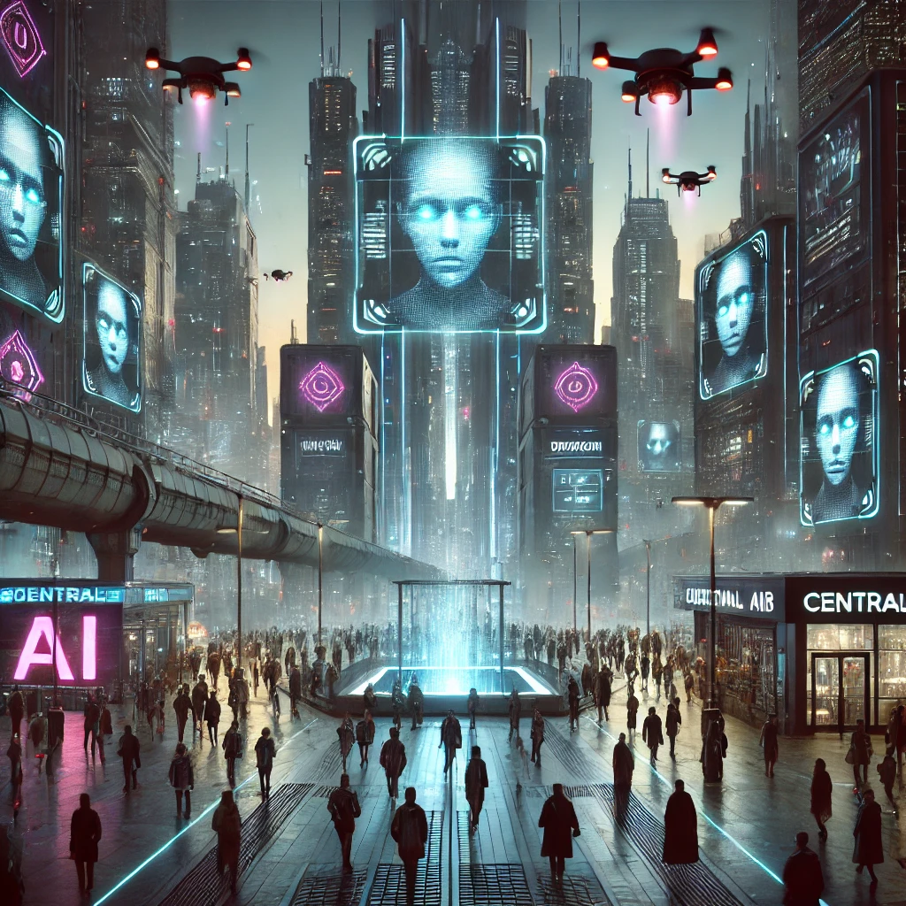

멋진 신세계
목차
작가
올더스 헉슬리
출판일
1932년
감상평에 대한 AI그림
"멋진 신세계"는 인간의 자유 및 개인성을 억압하는 사회 구조에 대한 많은 생각을 할 수 있게 해준 책이다.
첨단 기술이 발전된 사회에서 인간의 감정과 자율성의 유무가 아주 큰 차이를 만들어 낼 수 있음을 짐작할 수 있었고,
나또한 과학기술이 발전함에 따라 나의 모습을 잃지 않도록 해야겠다는 교훈을 얻게 되었다.

감상평에 대한 AI 감정 평가
이 글은 **"멋진 신세계"**를 읽고 느낀 감정을 담고 있으며, 감정 평가를 해보면 다음과 같이 분석할 수 있어.
1. **비판적 사고 (Critical Thinking) 🔍**
- 사회 구조가 인간의 자유와 개인성을 억압하는 것에 대해 깊이 고민하게 됨.
- 첨단 기술이 발전하는 과정에서 인간의 감정과 자율성이 중요한 역할을 한다는 점을 인식함.
2. **경각심 (Awareness & Caution) ⚠️**
- 과학기술이 발전하면서 개인의 정체성이 희미해질 수 있다는 점을 경계하는 태도.
- "나의 모습을 잃지 않도록 해야겠다"는 문장에서 자기 성찰과 다짐이 드러남.
3. **교훈과 자기 성장 (Lesson & Personal Growth) 🌱**
- 단순한 독후감을 넘어, 책이 개인적인 태도 변화에 영향을 줬다는 점이 강조됨.
- 미래 사회에서 자신의 정체성을 지키려는 의지가 느껴짐.
🔹 **종합적 감정 평가**
이 글에서는 **비판적 사고, 경각심, 자기 성찰 및 성장**의 감정이 주를 이루고 있어. 책의 내용을 단순히 받아들이는 것이 아니라, 자신의 삶과 연결 지어 생각하는 태도가 인상적이야! 😊